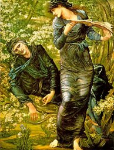

Sacred Texts Legends and Sagas England
|
 |
The Vita MerliniLatin text by Geoffrey of MonmouthTranslated by John Jay Parry[1925, copyright not renewed] |
This is the Latin text and translation of a narrative of the life of Merlin by the medieval historian Geoffrey of Monmouth. Thanks to Graeme K Talboys, who transcribed this text.
Title Page
The Life of Merlin
Vita Merlini: Latin